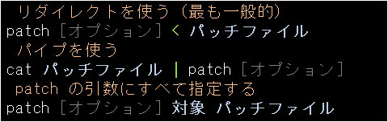
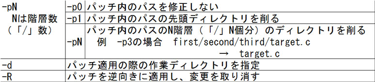
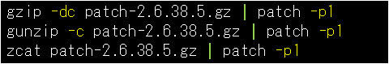

- 問題ID : 22091 makeによるソースコードからのビルドとインストール
- 履歴
正解
patch-kernel
解説
パッチの適用は通常 patch コマンドを利用して行いますが、カーネルをパッチでバージョンアップする場合などには、大量のパッチを当てなければいけないことがあります。
その際にパッチをひとつひとつ正しい順番で適用していくのは手間なので、/usr/src/linux/scripts ディレクトリ内に、patch-kernel というスクリプトが用意されています。
これを使うと、カーネルのソースコードに対して、バージョンアップのためのパッチを順々に自動で適用することが可能です。
その他の選択肢について解説します。
・patch -R
パッチによる変更を取り消すためのコマンドです。
・patch
patch コマンドには複数のパッチを一度に適用する機能はありません。
・multi-patch
・kernel-patch
このようなコマンド、スクリプトはありません。
参考
カーネルの一部機能に変更を加えたい場合やバージョンアップを行いたい場合などに、必要なパッチを取得・適用します。パッチとは特定のファイルに対する差分情報のことで、2つのファイル間の差異を出力する diff コマンドによって作成されます。
patch コマンドを使用してパッチファイルを適用（差分情報を使って内容を更新）します。
パッ
チは、それが適用される前の状態を仮定して更新を行う仕組みなので、あるパッチ X を当てる前に別のパッチ Y
によって内容が書き換わってしまっていた場合に、パッチ X の方はそのままでは適用できない、ということが起こります。patch
コマンドでパッチの適用に失敗した場合は、適用できなかった差分情報が「該当ファイル.rej」（reject：拒絶）というファイルに出力されます。
複数のパッチを扱う場合には、それらが両立できるものなのか、適用する順番に指定はないか等に気を配る必要があります。
なお、複数のパッチが順序通り揃っている場合、これを一気に適用する「patch-kernel」というスクリプトが用意されている場合があります。
patch コマンドの使い方は次のようにします。

上二つの方法では現在の作業ディレクトリとパッチファイル内に書かれたパスから、パッチを当てる対象ファイルを自動的に判断しますが、最後の方法ではパッチの対象ファイルを明示的に引数で指定している点に注意します。
オプションとしては以下の一覧のようなものが指定できます。パッチ適用の際にパスを削らないことを指定する -p0 や、先頭ひとつだけパスを削る -p1、パッチの適用を取り消す -R が特に重要です。

パイプを使ってパッチファイルの内容を patch コマンドに流しこむ方法は、パッチファイルが圧縮されている場合に応用でき、実際以下のような形でよく利用されます。

（-p1 オプションを指定しているのは一例。場合に応じて変える必要があります）
gzip -d や gunzip に -c オプションを加えると、解凍結果をファイルではなく標準出力に書き出せるので、それをパイプで patch コマンドに流しこむことで、解凍とパッチ適用を同時に行う動作が実現できます。
また zcat は gunzip -c と同じ動作をする単体のコマンドです。
圧縮形式が .bz2 である場合は、それぞれ bzip2, bunzip2, bzcat という対応するコマンドがありますので、同様のオプションを指定すれば同じことが可能です。
また、最近のカーネルソースはxzという圧縮率を高めた形式で圧縮されていますが、これはxzコマンドまたはver1.22以降のtarコマンドで解凍できます。
カーネルバージョン 4.x のパッチ 4.x.y は、4.x と 4.x.y の差分になっています。例えば「patch-4.7.3.xz」は 4.7 と 4.7.3 の差分です。
パッチ「patch-4.7.3.xz」を適用するには、カーネルソース 4.7 のディレクトリ「/usr/src/linux-4.7」に移動し、解凍したパッチを patch コマンドで適用します。